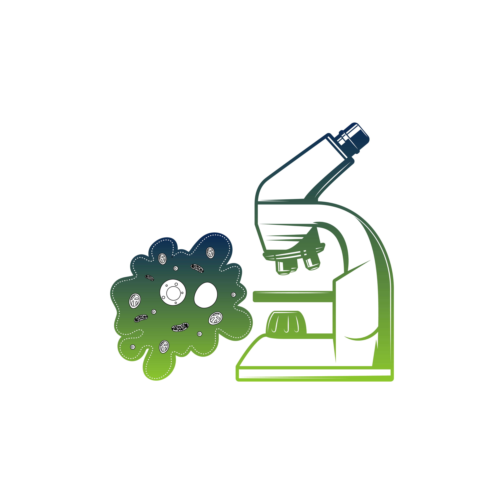

Biology
Study different types of Bacteria, Amoeba, Paramecium, and Volvox with the help of prepared slides and fresh culture / Charts

Theory:
The objective of this practical is to study and identify different types of microorganisms, including bacteria, Amoeba, Paramecium, and Volvox. By observing prepared slides and using charts, students will gain knowledge about the morphology, characteristics, and classification of these microorganisms.
Materials:
- Prepared slides of bacteria, Amoeba, Paramecium, and Volvox
- Microscopes
- Charts or diagrams illustrating the characteristics of each microorganism
- Paper and pen for note-taking
Procedure:
- Begin the practical by introducing the different types of microorganisms to be studied, including bacteria, Amoeba, Paramecium, and Volvox.
- Show charts or diagrams illustrating the morphology, characteristics, and classification of bacteria, Amoeba, Paramecium, and Volvox.
- Identification and Comparison:
- Instruct the students to identify and compare the observed microorganisms with the charts or diagrams provided.
Observations:
AMOEBA:
- Shape and Size:
- Amoeba is typically observed as a single-celled organism.
- It exhibits an irregular and constantly changing shape, often resembling a blob or a droplet of jelly.
- The size of Amoeba can vary, but it is usually between 200 to 500 micrometers in diameter.
- Cell Structure:
- The cell of Amoeba is surrounded by a flexible cell membrane.
- It lacks a fixed shape or a rigid cell wall.
- The cytoplasm appears granular and transparent.
- The cell contains a single, large nucleus.
- Pseudopodia:
- Pseudopodia, meaning "false feet," are temporary extensions of the cell membrane.
- Amoeba uses pseudopodia for locomotion and capturing food.
- Pseudopodia can be observed protruding from different parts of the cell, constantly changing in shape and direction.
- Locomotion:
- Amoeba moves by extending and retracting its pseudopodia.
- It uses the pseudopodia to crawl or glide along surfaces or through water.
- The movement of Amoeba is slow and amoeboid, characterized by flowing and changing shape.
- Ingestion of Food:
- Amoeba is a phagocytic organism, meaning it engulfs its food.
- Food particles, such as bacteria or organic matter, can be observed within the cytoplasm of Amoeba.
- The process of ingestion involves the extension of pseudopodia around the food particle, forming a food vacuole.
- Contractile Vacuole:
- Some slides may show the presence of a contractile vacuole in Amoeba.
- The contractile vacuole is responsible for regulating the water balance within the cell by expelling excess water.
Volvox:
- Colony Structure:
- Volvox is a colonial organism, meaning it consists of numerous individual cells arranged in a spherical colony.
- The colony of Volvox appears as a hollow sphere or ball composed of thousands of individual cells.
- Cell Structure:
- Each individual cell within the Volvox colony is spherical in shape.
- The cells are interconnected by cytoplasmic strands, forming a cohesive structure.
- The outer surface of the colony is covered by a gelatinous matrix that holds the cells together.
- Chloroplasts:
- The cells of Volvox contain numerous green chloroplasts, which are responsible for photosynthesis.
- The chloroplasts can be observed as small green structures within the cytoplasm of the cells.
- They are involved in capturing light energy and converting it into chemical energy.
- Daughter Colonies:
- Within the larger Volvox colony, smaller daughter colonies can often be observed.
- These daughter colonies are formed through asexual reproduction within the parent colony.
- Daughter colonies appear as small spheres attached to the larger Volvox colony.
- Flagella:
- Individual cells of Volvox possess two flagella, which are whip-like structures used for movement.
- The flagella are located at one end of the cell and can be observed as fine, thread-like structures.
- Flagella allow Volvox to move through water by beating in a coordinated manner.
- Cellular Differentiation (in certain species):
- Some species of Volvox exhibit cellular differentiation within the colony.
- Within the colony, specialized cells, such as reproductive cells or non-reproductive cells, can be observed.
- The specialized cells often have distinct features or functions.
Paramecium:
- Shape and Size:
- Paramecium is a single-celled organism that appears elongated or slipper-shaped.
- It has a definite anterior end (oral groove) and a posterior end (contractile vacuole).
- The size of Paramecium can vary, but it is typically around 100 to 300 micrometers in length.
- Cilia:
- Paramecium is covered with numerous hair-like projections called cilia.
- The cilia are evenly distributed on the surface of the cell and can be observed in constant motion.
- Oral Groove and Cytostome:
- The anterior end of Paramecium features an oral groove, which is a depressed area lined with cilia.
- The oral groove leads to a mouth-like opening called the cytostome.
- The cytostome is responsible for ingesting food particles, such as bacteria or organic matter.
- Macronucleus and Micronucleus:
- Paramecium possesses two types of nuclei: a large macronucleus and one or more small micronuclei.
- The macronucleus is responsible for the everyday functions of the cell, such as metabolism and growth.
- The micronucleus is involved in genetic reproduction and the exchange of genetic material during conjugation.
Bacteria:
- Size and Shape:
- Examine the bacteria under a microscope and note their size and shape. Bacteria can have different shapes such as cocci (spherical), bacilli (rod-shaped), spirilla (spiral-shaped), or other variations.
- Arrangement:
- Observe the arrangement of bacteria cells. They can be found singly, in pairs (diplo), in chains (strepto), in clusters (staphylo), or in other patterns.
- Cell Structure:
- Pay attention to the cell structure of bacteria. You may be able to observe the cell wall, cell membrane, and sometimes the presence of flagella or pili.
- Staining:
- Bacteria slides are often stained to enhance visibility. Different stains, such as Gram stain or acid-fast stain, can be used to distinguish between different types of bacteria based on their cell wall characteristics.
- Internal Structures:
- In some cases, you might be able to observe internal structures of bacteria, such as the presence of plasmids, endospores, or inclusion bodies. These structures can provide insights into the biology and behavior of the bacteria.
- Motility:
- If the bacteria are motile, you might be able to observe their movement under the microscope. Some bacteria move by using flagella, while others exhibit a gliding or twitching motion.
- Colony Morphology:
- In addition to observing individual bacterial cells, you can also examine the growth patterns and characteristics of bacterial colonies on the slide. Note the color, shape, texture, and any other visible features of the colonies.

STUDY DIFFERENT TYPES OF BACTERIA, AMOEBA, PARAMECIUM, AND VOLVOX WITH THE HELP OF PREPARED SLIDES AND FRESH CULTURE / CHARTS
Steps
- Place a prepared slide under the microscope.
- Study different microorganisms.

Books
- Khyber Pakhtunkhwa Biology 9 Practical Note Book Peshawar
- Khyber Pakhtunkhwa Biology 9 Text Book Peshawar
- Biology Book Curriculum & Text Book Board Lahore